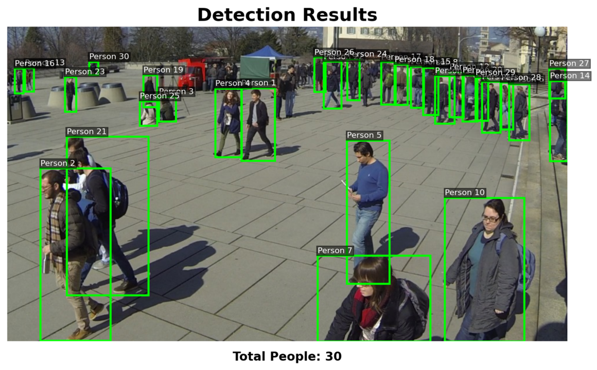
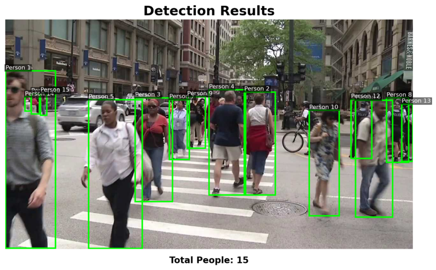

Detection Results
Selected scenarios, performance summary and demo videos.
98.5%
Accuracy Rate
30 FPS
Real-time Processing
4
Test Scenarios
90+
People Detected (max)
.png)



Project Demo Videos
Click play to view recorded demos illustrating detection and counting in different environments.
People Detection – Demo Video
Overall demonstration of the detection and counting workflow on sample footage.
People Detection – Outside Bus Scenario
Demonstrates detection of boarding and alighting activity from an outside view.
People Detection – Runner Detection Scenario
Tracking fast-moving individuals and assessing detection robustness with motion.
Project Overview
This project implements a real-time people detection and counting system using YOLO (You Only Look Once) object detection and OpenCV for visualization. The system detects people in video streams, tracks identities across frames, and counts entries/exits in defined regions.
Key Features
- Real-time detection with high accuracy
- People counting and trajectory tracking
- Support for multiple camera inputs and video files
- Customizable detection thresholds and tracking parameters
- Optimizations for edge deployment
Technical Implementation
The detection module uses a YOLO model for bounding-box predictions. OpenCV handles frame preprocessing and visualization. A lightweight tracker (SORT / DeepSORT style) maintains consistent IDs across frames and supports counting logic when objects cross predefined lines or regions.